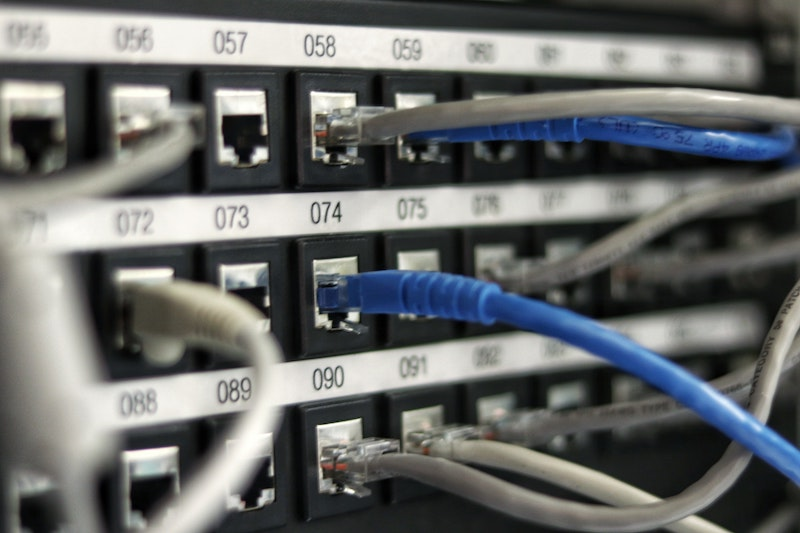
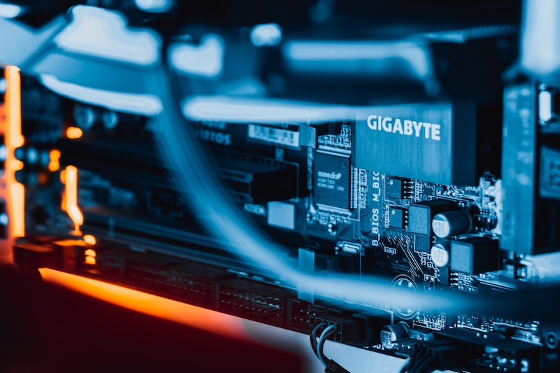

Сервера
Разбираем понятие «сервер» Изначально сервером называли приложение или процесс, запущенный на компьютере. Термин появился в 1969 году в документации, описывающей ARPANET (это предшественник интернета). Он произошел от слова serving, то есть «служить», которое хорошо описывает деятельность сервера в общих чертах.
Со временем термин немного расширился и теперь описывает любое устройство, на котором запущены серверные приложения. То есть те, что обслуживают пользователей в той или иной стези.
Со временем термин немного расширился и теперь описывает любое устройство, на котором запущены серверные приложения. То есть те, что обслуживают пользователей в той или иной стези.

Если говорить чуть более ясно, то это ПК, который беспрерывно работает и выступает в качестве площадки для разработки, базирования сетевых шлюзов, создания игровых платформ или хранения данных на постоянной основе.
Для чего нужны серверы?
Основное направление — поддержка интернет-ресурсов. Количество задач, возлагаемых на сервер велико. Вот несколько сценариев, в которых необходимы подобные устройства:
Почему их никогда не выключают?
Все описанные выше задачи подразумевают наличие аппаратной и программной платформы, которая постоянно находится в активном состоянии, обеспечивает высокую скорость и достаточную стабильность, чтобы сайты, приложения, почта и видеоигры неожиданно не отключались. Весь интернет держится на таких компьютерах.
Люди всегда хотят играть в любимые ММО, круглосуточно переписываются по электронной почте, работают и заходят на сайты. Это не физический магазин или компьютерный клуб. Нельзя просто взять и закрыть сайт на ночь и открыть к утру. Они должны быть доступны круглосуточно, а любое временное отключение считается критической ошибкой администрации ресурса, которая сильно бьет по репутации.
На серверы полагаются банковские службы, мессенджеры, такси, сервисы доставки еды, курьеры, государственные службы. Можно представить себе масштаб трагедии, если какой-то из удаленных компьютеров, поддерживающих инфраструктуру страны, вырубится.
Поэтому ими занимаются профессиональные компании, называемые хостинг-провайдерами. Они закупают мощное «железо», нанимают команду инженеров, обслуживающих все накупленное, и обеспечивают людей бесперебойным доступом к нужному им оборудованию.

Можно ли использовать любой компьютер в качестве сервера?
Да. Хоть ноутбук в сервер превращайте. Всего-то надо установить подходящее программное обеспечение. Поставил FTP-клиент, вот тебе и хранилище файлов. Поставил ПО для старта игровых платформ, вот тебе очередная площадка для игры в World of Warcraft. С хостингом веб-сайтов ситуация аналогичная.
Правда, нужно учесть ряд моментов:
